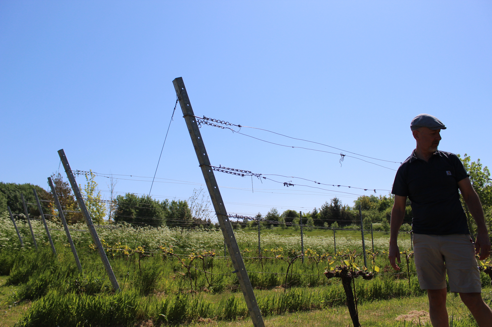
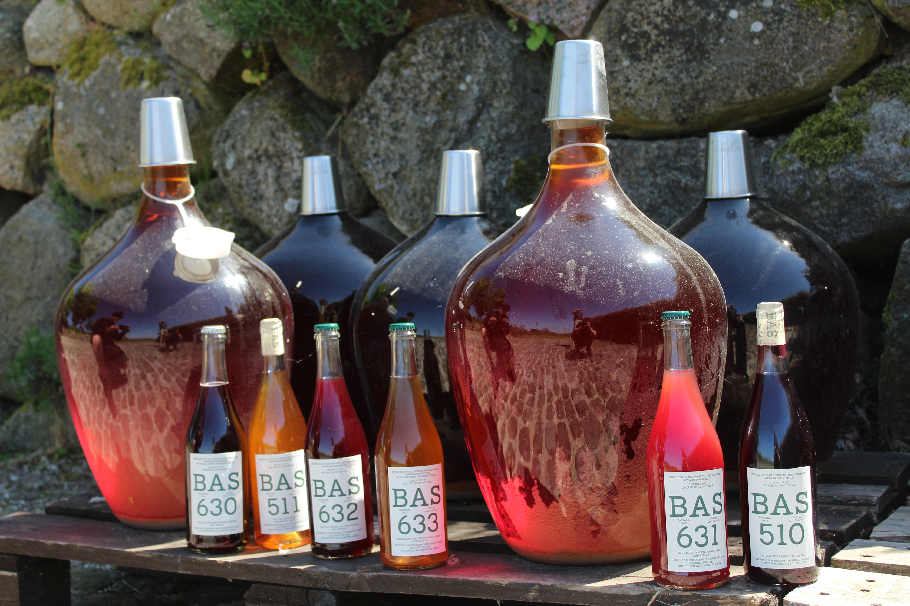
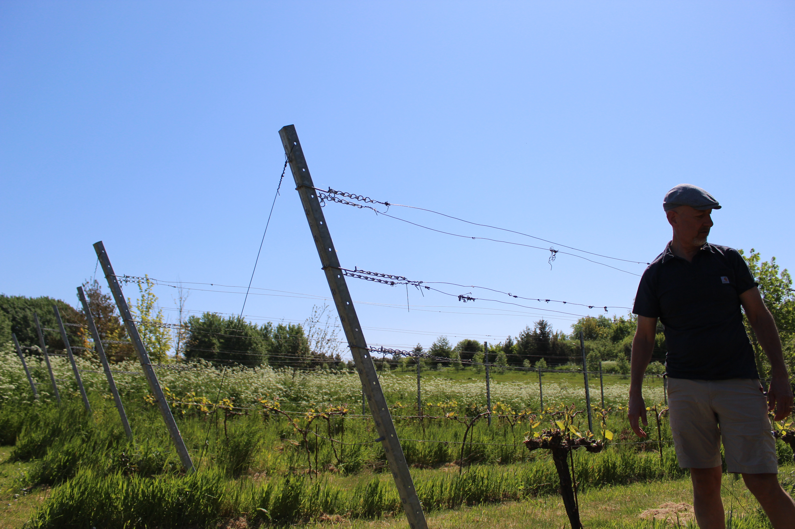
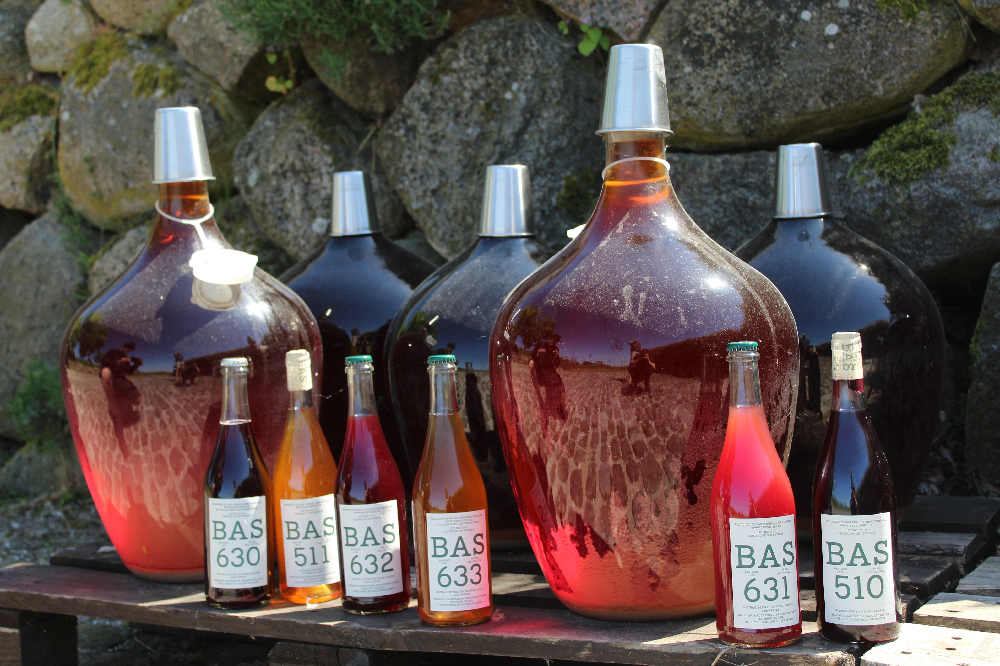

OUR WINERY
We make quality wine with personality.
Passion for winemaking drives everything we do. We are not limited by conventional wisdom, but taste what nature offer and let the flavours and our curiosity lead the way. We want to push the norm and “walk the extra mile” to create quality wine that challenge you and your taste buds.
Enjoy!
 



All our wines are made from hand-picked organic grapes, or other fruits, using simple ancestral vinification methods.
Our wines are made with passion and curiosity questioning the conventions in the search for new and different taste experiences. We farm our own grapes and fruit but, also buy from other organic farmers to experiment with alternative combinations, playing on the strength of local grapes and fruit varieties.
We taste and patiently follow the flavours we find intriguing. We produce natural wine with as little intervention as possible.
We try never to repeat ourselves. Each year is different, natures change is helping us to remain curious and open to new possibilities. Each wine is unique and requires different attention and patience. The result is a living wine, wholesome and full of naturally occurring microbiology.